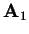
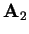
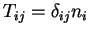

Next: KP - k-points generation
Up: Detailed description of options
Previous: Cl - Build up
Contents
M - Complex cell modifications
An extremely powerful option! It allows you to modify your existing
geometry in a number of ways and build up your final periodic cell.
You will be given an extended menu with self-explanatory options.
You should be able to change your lattice vectors; extend your cell;
rotate, shift the system; add, remove, shift atoms; change their species;
construct a slab for the surface calculation using e.g. Millers indices,
etc. What is more, after every step a geom.xyz (xyz-format)
file with the system geometry is written in the current directory
so that you can preview your cell on the fly as you build it using
a molecular viewer (e.g. Xmol)! In fact, you can even
preview it as an extended cell (the option Bb). Every step
can also be undone.
The M-menu looks like this:
>>>>>>>>>>>>>>>>>>>>>>>>><<<<<<<<<<<<<<<<<<<<<<<<<<<
... CURRENT lattice vectors for the supercell
ARE...
AJ(1): 10.88160 0.00000 0.00000
AJ(2): 0.00000 10.88160 0.00000
AJ(3): 0.00000 0.00000 10.88160
>>>>>>>>>>>>>>>>
Current species are: <<<<<<<<<<<<<<
Si O
========= CHOOSE AN OPTION:
/==================================================\\
|| HELP: a complex transformation is obtained
by ||
|| applying elementary operations one after another||
\\==================================================/
1. General shift of the system (new origin)
2. Shift the system to the center of mass
3. Rotate the system (the same origin)
4. Move an atom to an equivalent position
Rf. Choose equivalent positions wrt reference
input file
44. Cluster atoms around particular point
6. Choose unit cell with respect to Miller indices:
1st 2 lattice vectors will be in the (hkl) plane
Ex. Diagonal "breeding": construct
a supercell
Su. General "breeding": construct
a supercell
8. Create/modify SLAB: change the 3rd(z) lattice
vector
9. Arbitrarily change lattice vectors (e.g. for
molecules)
10. Manually add an atom to the cell
Ad. Add atoms from another file
/11. Remove a range of atoms from the cell
\12. Keep a range of atoms in the
cell: remove the rest
13. Rename a range of atoms: change species
Mv. Move a range of atoms to another general position
Rt. Rotate a range of atoms about the X,Y,Z axes
----- operations with multiple
lists of atoms ------
T. Tag atoms (specify multiple lists): currently
OFF
------- g e n
e r a l s e t t i n g s --------
UU. ****** RESTORE the original serting
******
U. ********** UNDO the last
step *************
XY. Produce <geom.xyz> file after every change
for Xmol
Hs. H atoms to be added to <geom.xyz> file: NO
An. [For input] Coordinates are specified
in: <AtomNumber>
Co. Show current atomic positions in fractional/Cartesian
Sy. Show the point symmetry
Bb. Set the size of the breeding box for visualisation
>>>>>
Current setting for the breeding box: <<<<<
[ 0... 0] x [ 0... 0] x [ 0... 0]
>>>>>
extension = 1, # of atoms= 65
W. Write <geom.xyz> file to preview using current
breeding
S. Save.
Q. Proceed/Quit
-----> Choose an appropriate
option:
At the top, the current lattice vectors and species
are shown. What you can do is explained below:
- 1 - all atoms in the cell will be displaced to a new position,
the displacement vector will be asked in units corresponding to the
setting An
- 2 - similar, but the displacement vector will be calculated
from the atomic masses
- 3 - a rotation of the coordinate system is specified by giving
new directions for a pair of two existing primitive lattice vectors
using the existing coordinate system; of course, the angle
between them should be preserved! This may be an inconvenience, but
in some cases the choice is obvious
- 4 - move an atom to an equivalent position by adding lattice
vectors to its current coordinate; this may be e.g. useful when building
up a slab
- Rf - some codes such as VASP change atomic
positions in the cell in such a way that their fractional coordinates
become between 0 and 1; this may be not really wanted since after
the relaxation (with VASP) it may be very difficult
to recognise the cell; a cure is here: in this option upi will be
prompted again to the Input-menu (Section 2.4)
to read in another input file (e.g. before the relaxation) the atomic
coordinates in the two geometries will be compared and proper lattice
vectors applied to the relaxed atoms to ``return'' them to the
original unit cell
- 44 - atoms in the system around a given point (atom) are
shown that cluster around it; more specifically, the displayed atoms
have fractional coordinates between -0.5 and 0.5 if the centre of
the coordinate system is positioned at the chosen atom
- 6 - after specifying three Miller indices, a new equivalent
set of primitive translations for the cell is given in which the first
two vectors

and

lie within the
plane characterised by the Miller indices; use the option 3
above to rotate the whole cell so that your plane becomes perpendicular
to the  axes (if desired)
axes (if desired)
- Ex - extend you cell by elongating the three current primitive
translations, i.e. the transformation matrix of Eq. (2.6.4)
is diagonal:

; the three integers  are
to be specified
are
to be specified
- Su - the current cell is extended using a general transformation
matrix

- 8 - the third lattice vector can be arbitrarily changed here;
this is necessary in creating a slab out of a bulk cell assuming that
the vacuum gap is opened via the third lattice vector; note that atomic
positions in the cell will not change
- 9 - all three lattice vectors can be changed; this may be
useful in calculating a molecule or a cluster, if the distance between
images must be changed; of course, atomic positions inside the cell
do not change
- 10 - an additional atom is added to the cell; its position
must be unique, otherwise, the atom is not added
- Ad - similar, but in this case all atoms from another file
(that may be written even in a different format) can be added to the
current system; the Input-menu (Section 2.4)
is called here
- 11, 12 - these two options remove a set of atoms
from the cell
- 13 - this renames a set of atoms, i.e. it changes their species
into another species; this may be useful, e.g. in changing the lowermost
atoms of the slab into hydrogens to terminate properly the slab and
thus simulate the bulk at the lower surface
- Mv - move a set of atoms to another position (Section 2.6.11.2)
- Rt - rotate a set of atoms (Section 2.6.11.3)
Normally, a set of atoms is chosen by two atomic numbers, in which
case all atoms with the numbers in between are also chosen.
If it is required to have a more complex non-contagious set of atoms
in the list, use the option T, that allows you to do this
(see Section 1.2). Note that all atoms added to the system
from another file (option Ad) are tagged automatically, so
that you can move and/or rotate them.
Other useful options (in seetings) include:
- U - undo the last transformation
- UU - restore the original geometry (the one with which you
entered the M-menu initially)
Once the necessary geometry is created (the lattice vectors, number
of atoms in species and their positions in space), it can be saved
using option S (Section 2.6.11.1).
Next: KP - k-points generation
Up: Detailed description of options
Previous: Cl - Build up
Contents
Lev Kantorovich
2006-05-08